Setup & Instructions
Welcome to JetWages — your tool to track and understand complex cabin crew wages. Set the app up once, then use the sections below for roster, pay, and the rest of the tools.
Start
Sign in or register, then choose your country, then enter pay by hand or from a payslip. After a verified sign-in you can recover an online backup, recover an offline backup, or start fresh.
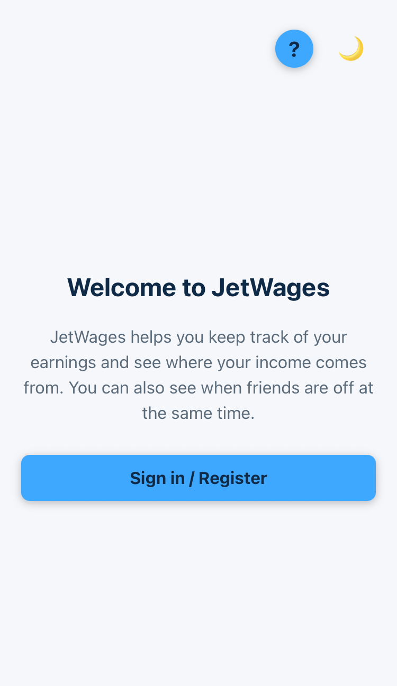
1. Sign in or register
The first screen asks you to sign in or register. Pay setup continues after that account is verified.
- Tap Sign in / Register.
- Create the account or sign in with the staff number and password.
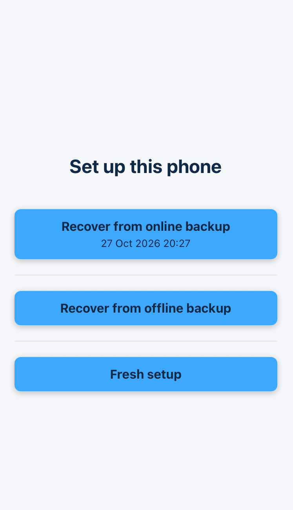
2. Recover or start fresh
A verified sign-in opens three choices. A line separates them. Leaving the app before setup is finished shows this screen again.
- Recover from online backup — restore the encrypted backup. The button shows when that copy was saved.
- Recover from offline backup — pick a copy you saved earlier.
- Fresh setup — continue with country and pay. You can go back to these choices.

3. Country
Your country controls currency display and how payslips are read.
Colours are chosen in Settings → Appearance. They do not change by themselves during setup.
- Tap Select your country and pick the country you operate from.
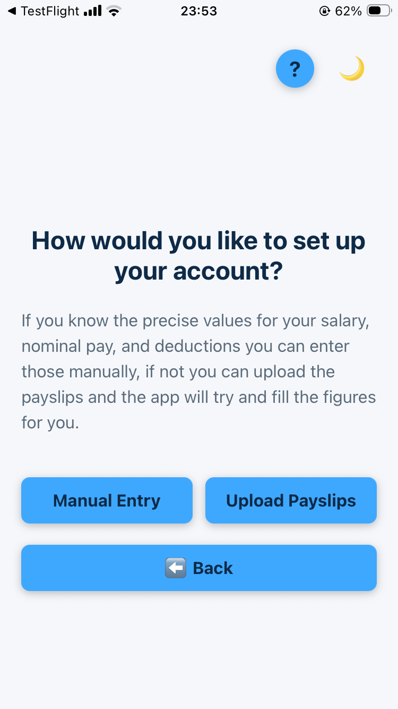
4. Setup method
Choose how to enter salary details:
- Manual Entry — if you already know basic pay, nominal pay, and deductions.
- Upload Payslips — let the app extract figures from PDF payslips (the steps below follow this path).

5. Upload your payslip
- Tap Select PDF File.
- Choose a monthly payslip PDF from your device.
- Wait while the app extracts salary information.
On iOS, PDFs are processed on JetWages’ secure server, then deleted. On Android, a text PDF stays on the phone; an image-only PDF uses that same server.

6. Review core salary
Confirm the values extracted from your payslip (or edit them):
- Monthly Basic Pay
- Language Pay (optional)
- Pension Contribution (%) (optional)
- Tap Next: Review Benefits, then keep only pre-tax benefits that apply to you.
Note: Pre-tax benefits are the ones that show on the left hand side of the payslip.
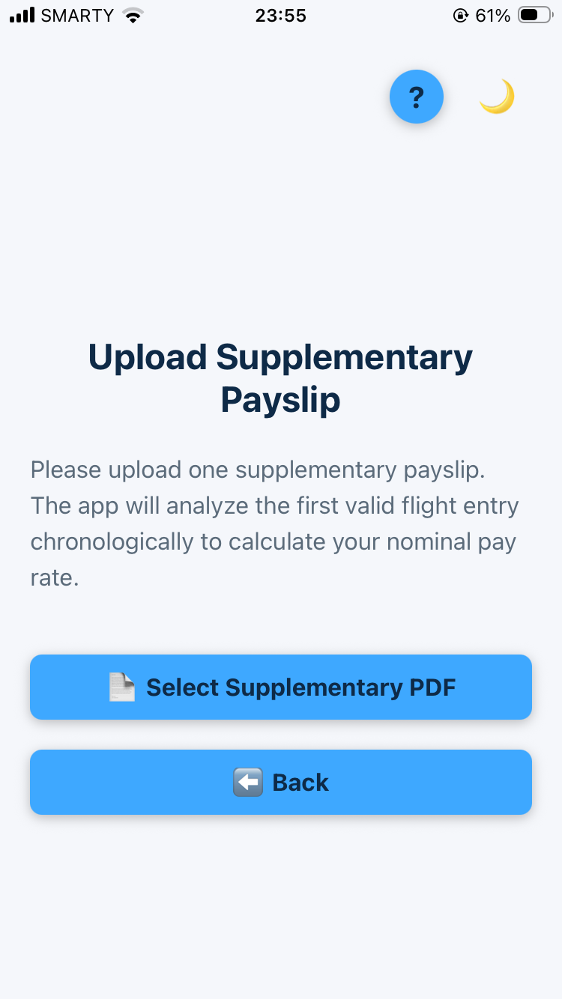
7. Upload a supplementary payslip
The app uses the first valid flight, in date order, to work out your nominal pay.
- Tap Select Supplementary PDF.
- Pick a supplementary payslip that includes flight pay data.

8. Confirm nominal pay
- Review the calculated Nominal Pay value.
- Edit it if needed.
- Tap Next: Leave estimate.
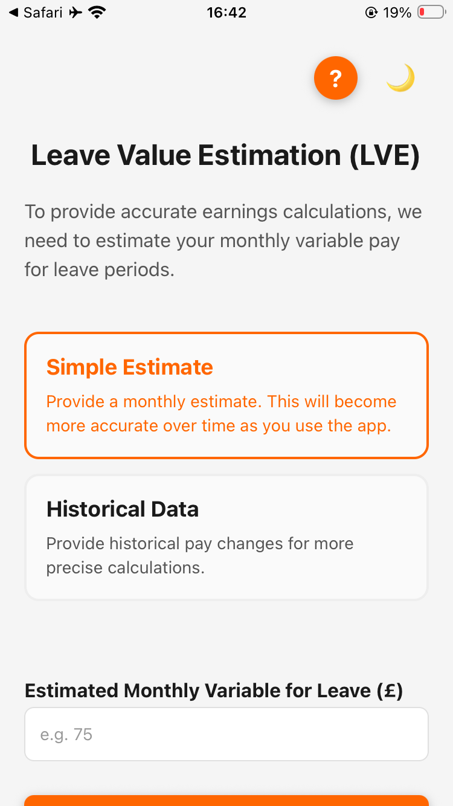
9. Leave estimate
Choose how JetWages should estimate variable pay during leave:
- Simple Estimate — enter a monthly figure (for example £75). This improves as you use the app.
- Historical Data — upload past schedules and supplementary payslips for a more precise figure (next step).

10. Historical files (optional path)
If you chose Historical Data, upload files here:
- Schedules must be a Personal Crew Schedule Report saved as HTML, in the horizontal table layout. Other HTML pages will not parse.
- Supplementary payslips must be PDF.
- Tap Pick Files, select schedules and payslips together, then Save.

11. Extras per flight
Some roles earn an extra payment per flight (for example Upranker or Trainer).
- Tap Yes if this applies, then add the extra type and amount when prompted.
- Tap No if it does not.

12. Setup complete
- You’ll see a Setup Complete confirmation over the home calendar.
- Tap OK to start using JetWages.
Note: If a PDF step fails, use Manual Entry (or enter values by hand when offered) and continue.
Pay
The setup screens above store the figures the month is built from. You can change them later.
- Monthly basic pay, optional language pay, and pension.
- Pre-tax benefits — the ones on the left of the payslip.
- Nominal pay — taken from the first valid flight on a supplementary PDF, in date order. Edit it if the extract is wrong.
- Leave estimate — a simple monthly figure, or a figure from past schedules and supplementary PDFs.
Later changes live in Settings → Pay, including extras per flight. Take-home in Pie View uses Settings → Tax: tax code, student loan, National Insurance category, and whether pension is deducted before tax.
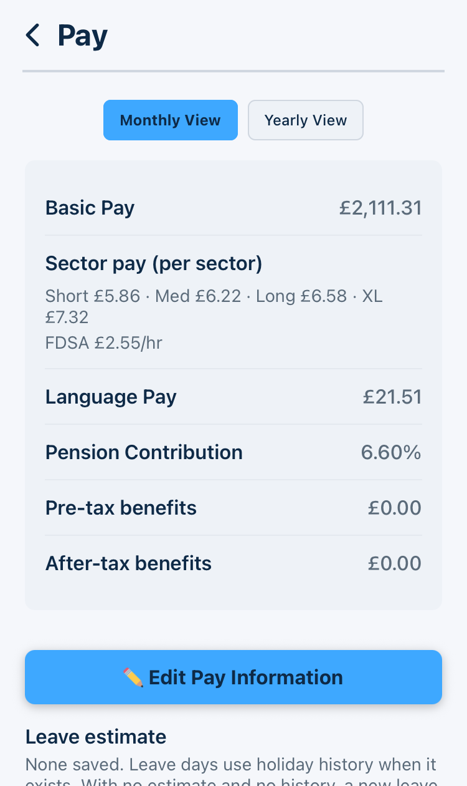
Settings → Pay
Open Settings, then Pay. Monthly View and Yearly View show the same rates: basic pay, sector or flight rates, language pay, pension, and pre-tax and after-tax benefits.
Tap Edit Pay Information to change them. Leave estimate is listed under the rates.
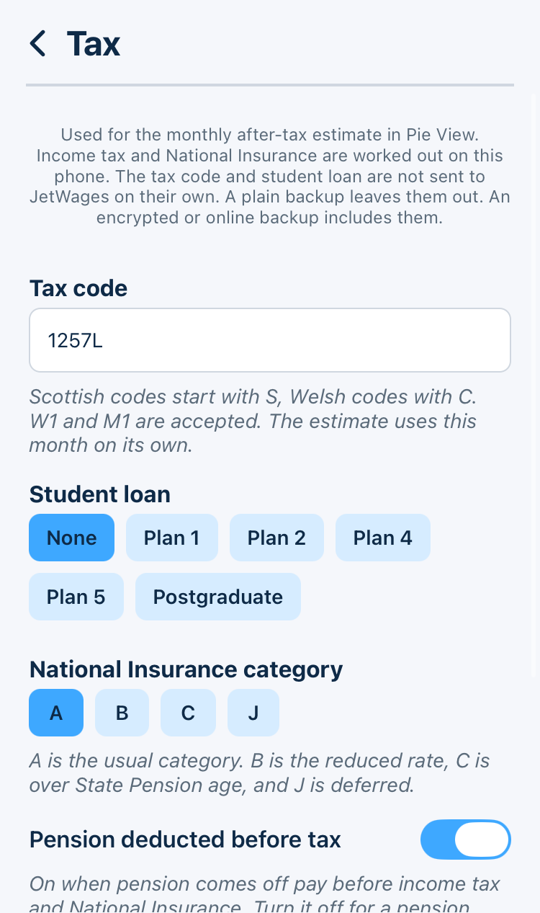
Settings → Tax
Tax code, student loan plan, National Insurance category, and whether pension is deducted before tax are in Settings → Tax. Pie View uses them for the UK take-home estimate. Income tax and National Insurance are worked out on the phone.
Roster

Your month at a glance
After setup you land on the home calendar. This is your calendar, where you see an overview of your month. Use the arrows to change month, and open Menu for tools and settings.

Upload Calendar
From Menu, open Upload Calendar. Pick Calendar to keep your schedule in sync, or HTML / PDF to import a Personal Crew Schedule Report. Calendar sync is the most reliable option.
- Calendar — sync with your device calendar (recommended)
- HTML — Personal Crew Schedule Report, horizontal table layout
- PDF — Personal Crew Schedule Report PDF. Scanned or image-only files can be slower or incomplete.
HTML schedules
Use a Personal Crew Schedule Report saved as HTML, in the horizontal table layout. Other HTML pages will not parse. Calendar sync is better if you can use it.

Calendar permissions
If you choose device calendar sync, JetWages asks to connect. It reads roster events forward through the rolling window, then you choose how far back the first import should go.
- Tap Allow calendar access to continue.

Populated calendar
Duties appear as icons on each day (for example flights, standby, days off, or leave). Tap any day to review or edit details.
Pull to refresh
Calendar sync runs when you open the app. Pull down on Home to sync again. It does not sync every time you switch back to the app.
Overlapping duties
If two different duties overlap, the app asks which one to keep. Tap a duty card to keep it, or open Edit day. The same destination chain with later times is kept automatically.
Turn on No sync on a day and calendar sync will not overwrite it. It turns on automatically when you edit.
A day

Select a day
Tap a date to open the day actions. Need to make changes? That is what Edit is for. Want to add figures? Use Sales. Something different, such as a delay or day-off payment? Use Extras.
- Edit — flights, duties, times, and leave
- Sales — onboard sales for the day
- Extras — delay pay, night stop, uprank, and similar payments
Opening Edit, Sales, or Extras shows a short tour of that screen.
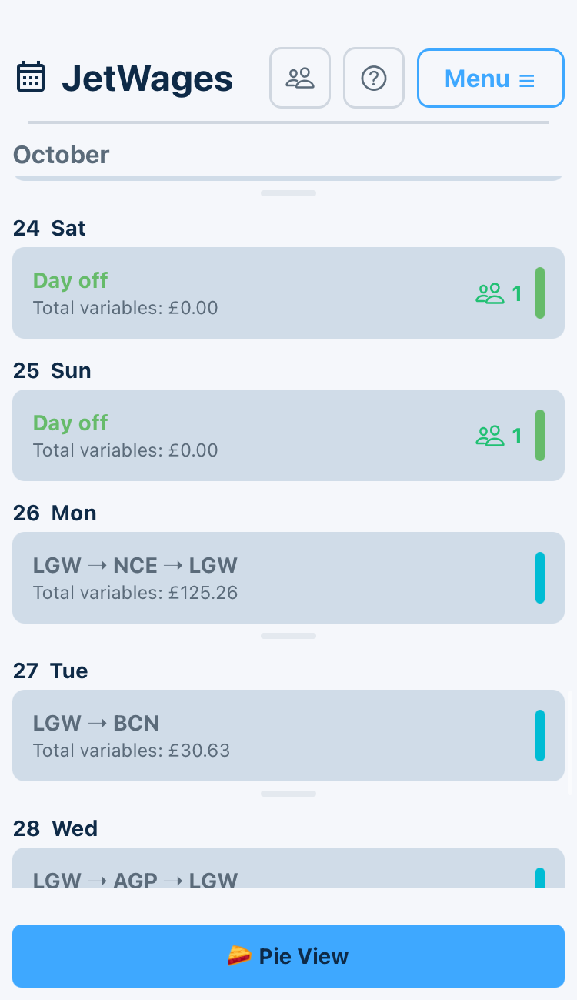
Month or day by day
Tap the JetWages title on Home to switch between the monthly calendar and the day-by-day list. The same choice is in Settings → Appearance.
On the list, a day off can show how many friends are also free.

Edit Day
This is where you fix a single day — flights, duties, times, and leave. Changes here update pay for that date.
Tap Add Duty to see what you can add, then Save when you are finished. Your changes are stored for this date.
When No sync is on, calendar sync will not overwrite the day. It turns on automatically when you edit.

Select a duty
Flight, ADTY, leave, standby, training, and days off are all listed here.
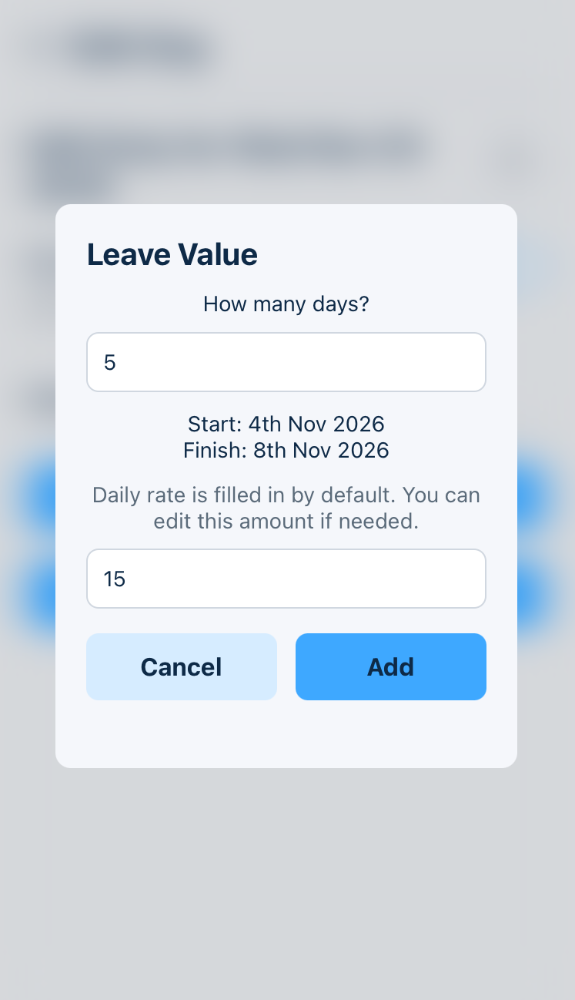
Leave or a day off across several days
Leave asks how many days. The dialog shows the start and finish dates, and a daily rate you can edit. Add writes that leave on every day in the range, and No sync is turned on for those days. A day off across several days works the same way.

Flight sectors
Enter airport codes or search by city. Use + to add another sector on the same day.
Turn on Flight number and times when you need STD, STA, and sector pay for each sector. STD and STA are not mandatory.

Debrief time
After flying, set debrief time here. It is used for sales reminders. Set the timezone (UTC or local). Use +1 if duty finishes the next day.

ADTY times
For ADTY, register start (report) and finish (release). If a sector starts during ADTY, payable standby ends at that STD. Use Finish next day when needed.

Add sales
This is your total onboard sales for the day. Commission is calculated from this figure. The crew count is how many crew share that sales figure.
Turn on Comp for complementary sales. Those figures are tracked separately from paid onboard sales.
Use the plus if an aircraft swap changed the crew count. Each figure is paid on its own crew count and the commissions are added together.

Add extras
Enter the extra amount and a short comment, such as a delay or day-off payment. After you save, you can add it to Favourites so you can reuse it next time.
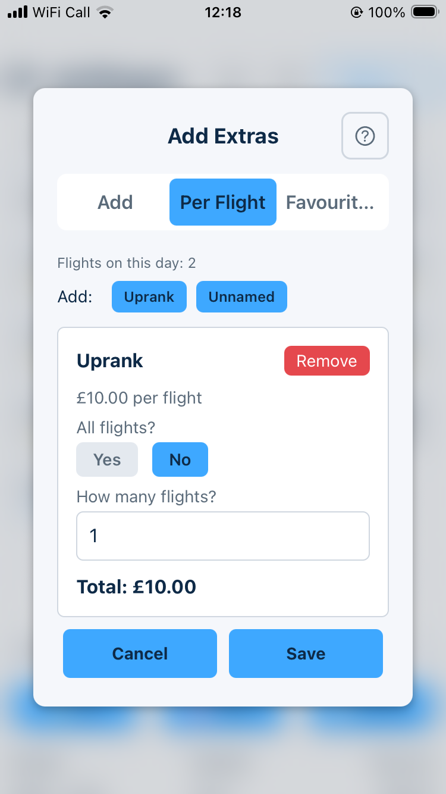
Per-flight extras
You can also add per-flight extras such as uprank or instructing. Turn them on in Settings → Pay → Extras Per Flight. Choose whether the extra applies to all flights that day or only some, then save.
The month
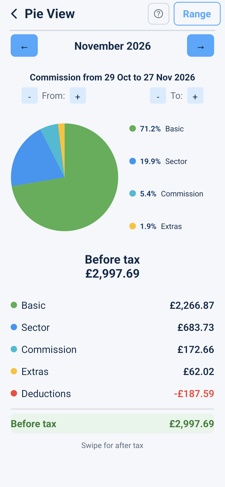
Pie View
Pie View shows a monthly pie of your earnings: Basic, Sector, Commission, Extras, and Deductions. Open it from Home.
This is the month’s pay. Swipe the chart left or right for the previous or next month. With a year range, that swipe moves a year.
On a month, the From and To controls set the commission window. The total under the chart starts on Before tax.
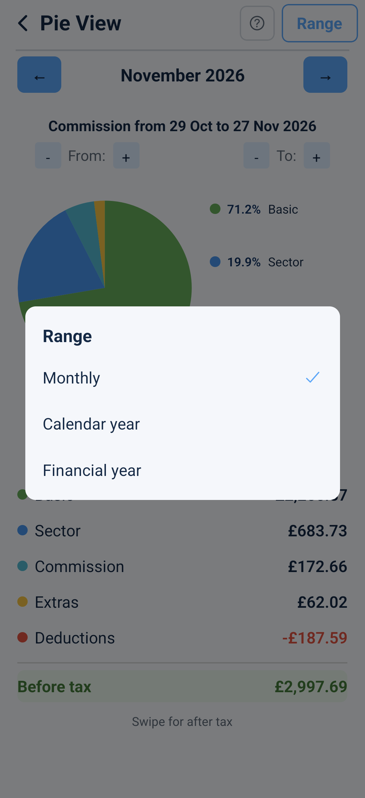
Range
Range switches Monthly, a calendar year, or a UK financial year (April to March, United Kingdom only). A year adds up each month. Leaving Pie View returns to monthly.
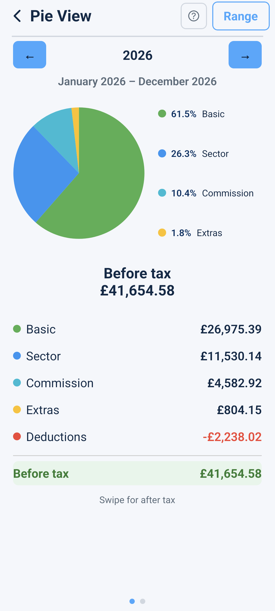
A calendar year
A calendar year runs from January to December. The arrows move a whole year. The total under the chart is still before tax, and the summary still swipes to after tax.
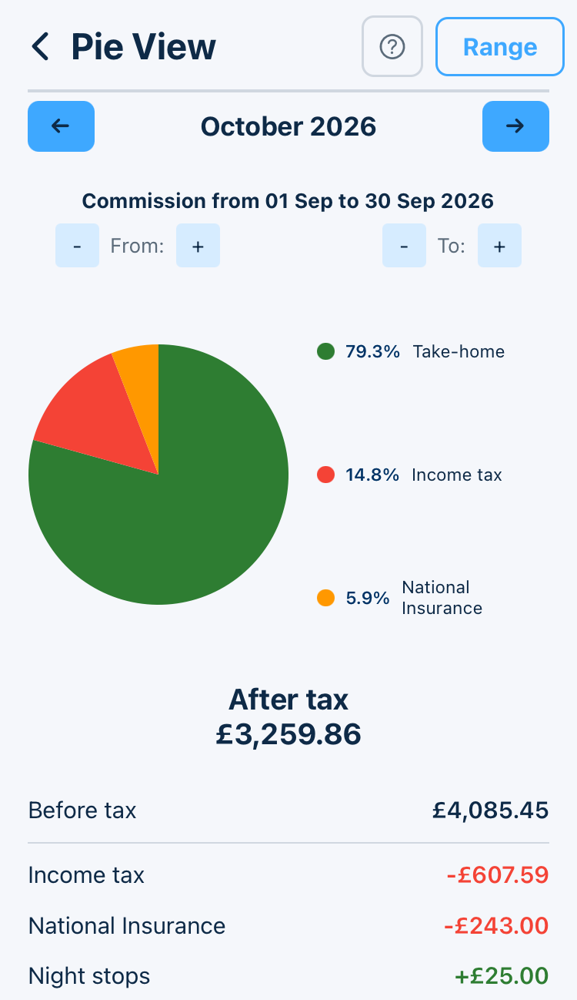
Before tax and take-home
Swipe the summary under the chart. Before tax is the earnings breakdown. After tax is the UK take-home estimate: income tax, National Insurance, student loan, and after-tax benefits, with night stops added. The pie follows the swipe. Tax code, student loan, NI category, and pension are in Settings → Tax.
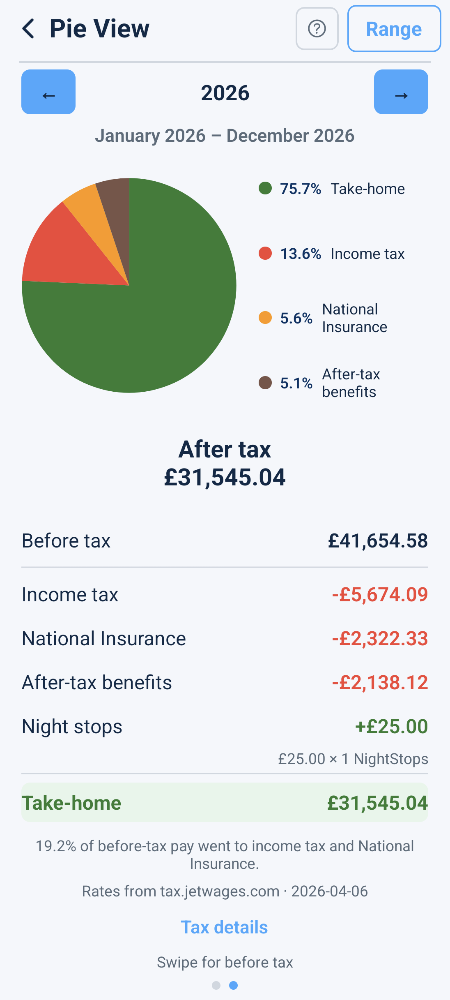
A year, after tax
The same swipe works on a year. After tax is the take-home for those months, including income tax, National Insurance, after-tax benefits, and night stops.
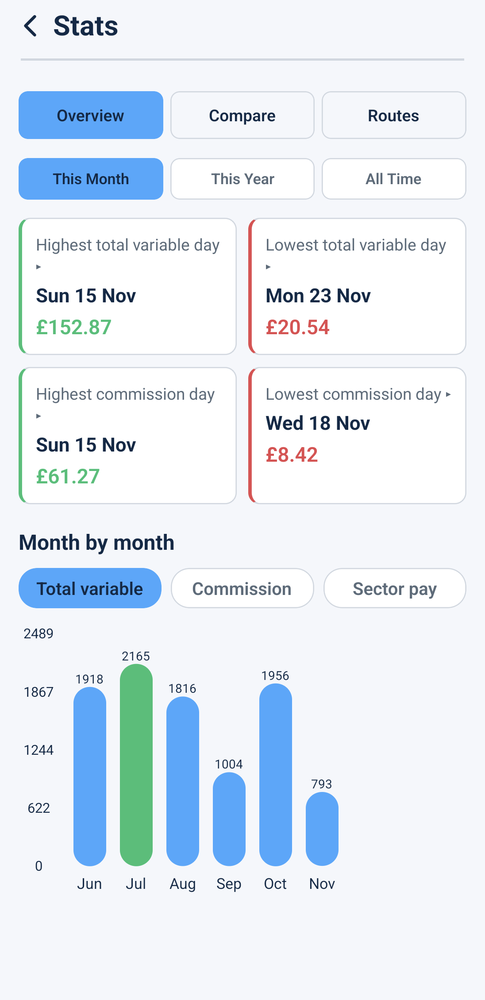
Stats
Open Stats from the menu. Overview, Compare, and Routes sit across the top. Choose This Month, This Year, or All Time.
Overview shows the highest and lowest variable days, the highest and lowest commission days, and a month-by-month chart. The chart can switch between total variable, commission, and sector pay.
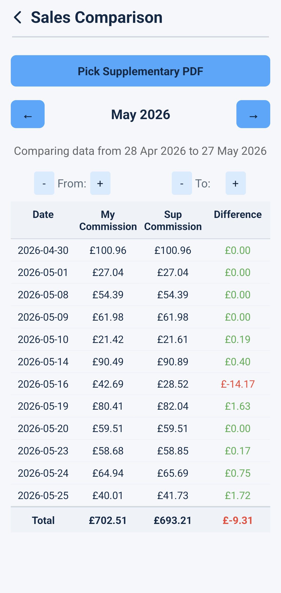
Sales Comparison
Sales Comparison checks a supplementary payslip against your sales figures so you can spot any underpayments. Open it from the menu, then tap Pick Supplementary PDF.
Each day lists your commission, the commission on the supplementary payslip, and the difference. The total is at the bottom.
Other crew
One sign-in covers Swap, Friends, and the online copy. Routes, pay, and sales stay on this phone.
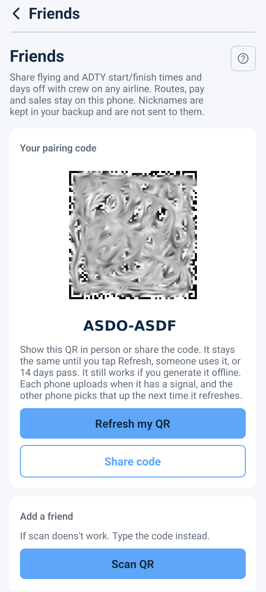
Show your QR
Pair with other crew to see who is off the same day, who starts a flying or ADTY duty around the same time, and who finishes as you start or starts as you finish.
Friends shows your pairing code as a QR and as text. Share code sends it. Refresh my QR replaces it. The code stays until you refresh it, someone uses it, or 14 days pass. It still works if you generate it offline. Each phone uploads when it has a signal, and the other phone picks that up the next time it refreshes.
Add a friend
Scan their QR, or type the 8-character code under it. You can also search by staff number. They accept before you are linked.
Give them a nickname. It is kept in your backup and is not sent to them. Remove stops sharing. You can have up to 30 friends.
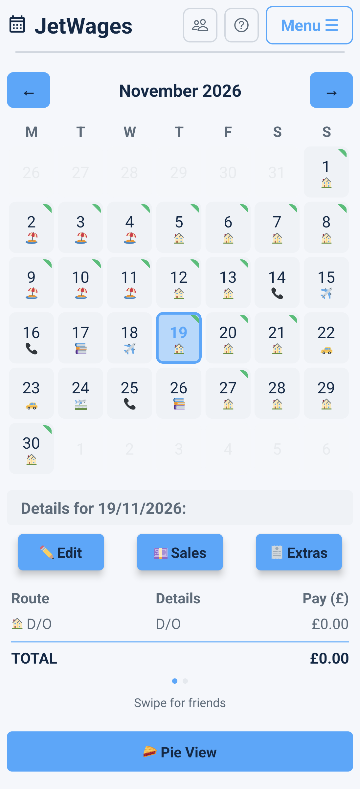
On Home
A green corner on a day off means a friend is also free.
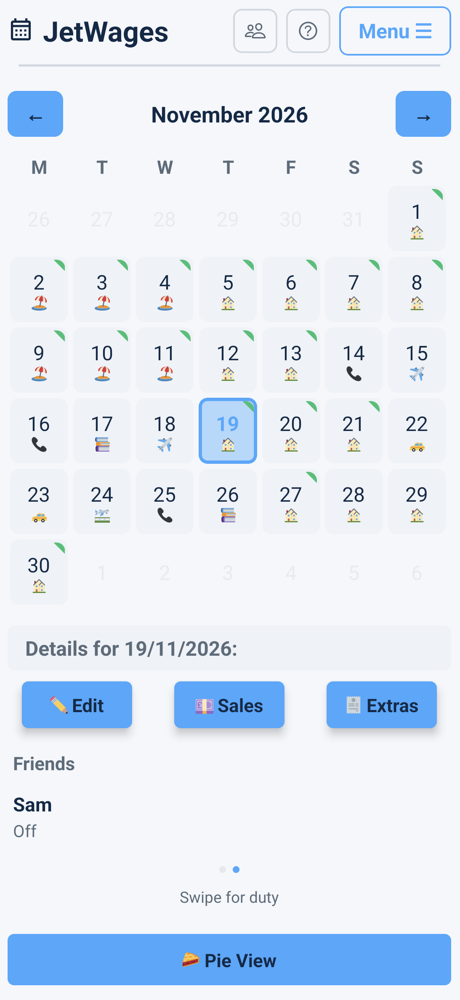
Duty and Friends
Select a day and swipe the details. The bottom half swipes between the duty and Friends. Friends lists who is off, who starts around the same time, or who finishes as you start.
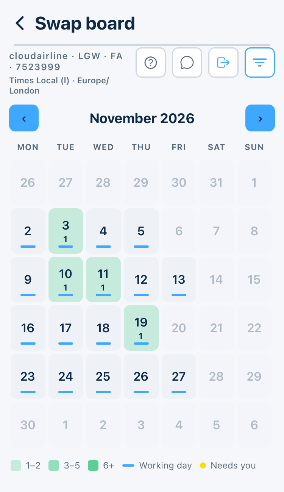
Swap board
Open Swap from the menu. It is a crew-to-crew board, not your official swap process. Sign in with the same account, then set home base and role if you have not already.
The month shows how many duties are posted. Green is the count: 1–2, 3–5, or 6+. A blue line is a working day on your roster. Yellow means an offer needs you. Times follow Local (l) or Zulu (z) from Settings → Country and clocks.
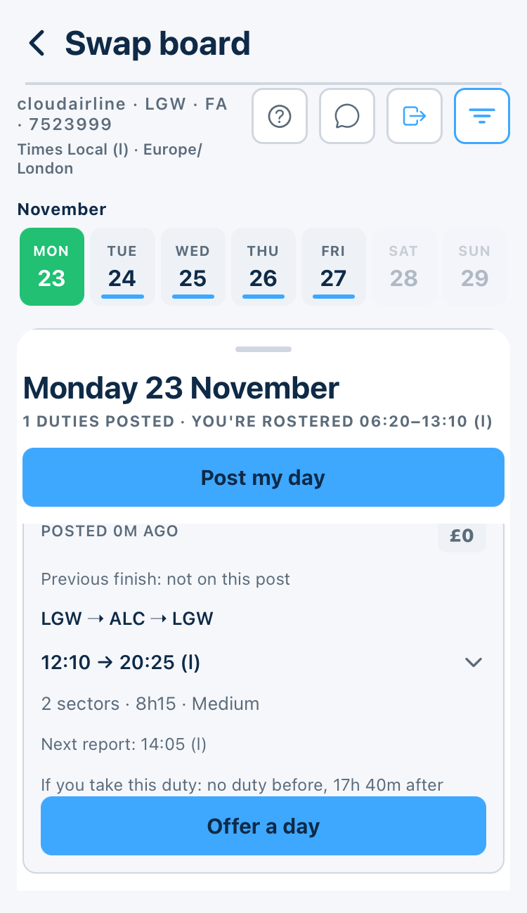
A day on the board
Tap a day to see duties other crew have posted, and the duty you are rostered. Post my day puts your duty on the board. Offer a day offers your duty in exchange for a posted one.
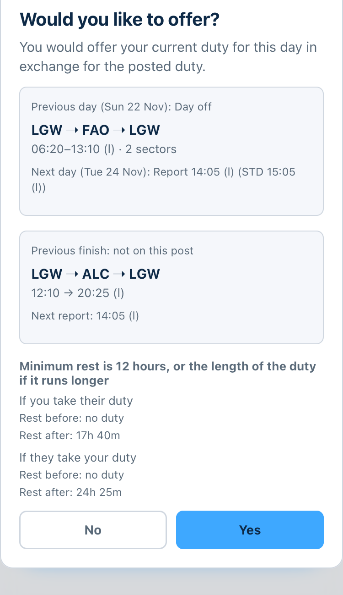
Offer a day
Before the offer is sent, the app shows your duty and the posted duty, and the rest before and after each way. Minimum rest is 12 hours, or the length of the duty if that runs longer. Tap Yes to send the offer.

Your post
After you post, the day shows your duty and any note. Edit notes changes the note. Remove post takes the duty off the board.

An offer that needs you
An incoming offer is marked Needs you. It shows the duty they offered, the rest, and the duty they want from you. Tap Accept or Reject.

After you accept
Agree the change with your airline outside the app. The offer stays Pending until both of you tap Airline confirmed. When both have confirmed, the offer is finished and leaves the board.
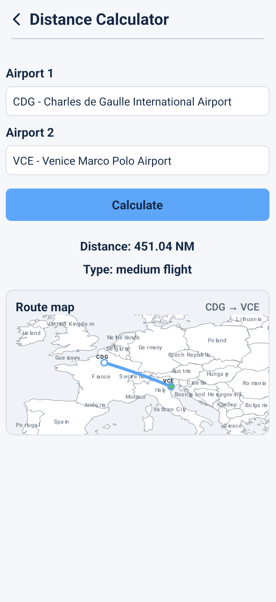
Distance Calculator
Distance Calculator checks distances between airports. Open it from the menu. Type a name or a three-letter code for each airport, then tap Calculate.
The result is the distance in nautical miles and a flight type. An offline route map can be turned on in Settings → Appearance. It does not need a network connection.
Look after it
Settings is where you change how the app works. Pay stays on the phone. A locked copy and the online copy cannot be read by JetWages.
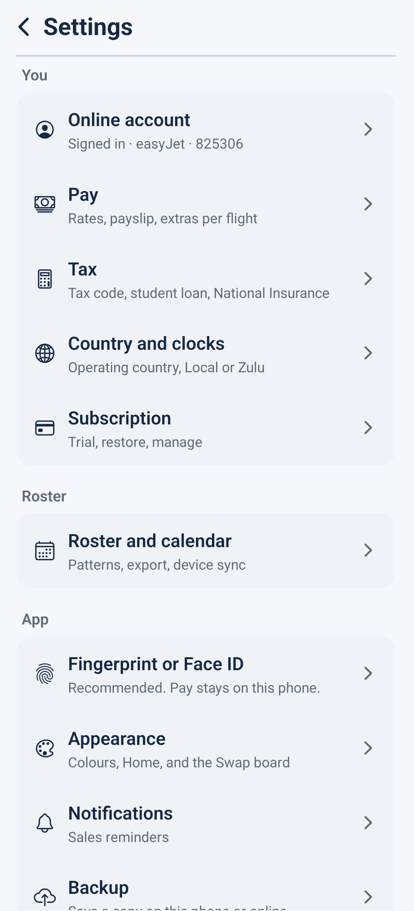
Settings
Open Settings from the menu. The pages, in order, are:
- Online account — the sign-in used for Swap, Friends, and backup
- Pay — rates, payslip, extras per flight
- Tax — tax code, student loan, National Insurance
- Country and clocks — operating country, Local (l) or Zulu (z)
- Subscription — trial, restore, manage
- Roster and calendar — export and device sync
- Fingerprint or Face ID — recommended, because pay stays on this phone
- Appearance — colours, Home as a month or day by day, and the Swap board layout
- Notifications — sales reminders
- Backup — a copy on this phone or online
- Service status — sign-in, Swap, Friends, backup, and the other online services
- Help and about — feedback, What’s new, and replay the tutorial
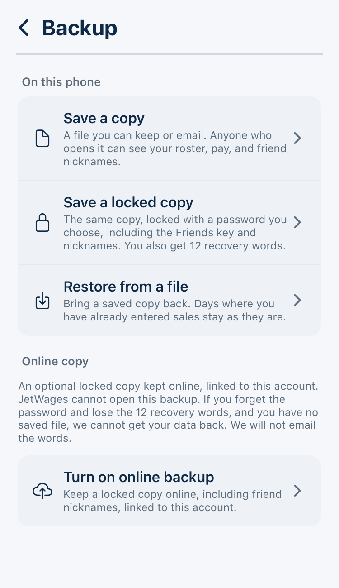
Backup
- Save a copy — a file you can keep or email. Anyone who opens it can see your roster, pay, and friend nicknames.
- Save a locked copy — the same file, locked with a password, plus 12 recovery words. Keep the words.
- Restore from a file — bring a saved copy back. Days where you have already entered sales stay as they are.
- Turn on online backup — an optional locked copy kept online. JetWages cannot open it.
You’re ready to go. Replay the tour any time from the help icon, or from Settings → Help and about → Show app tutorial.